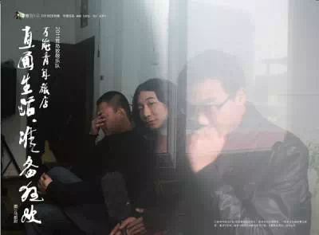
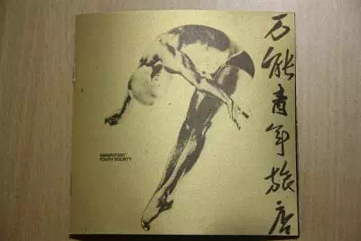
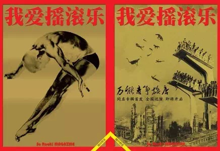
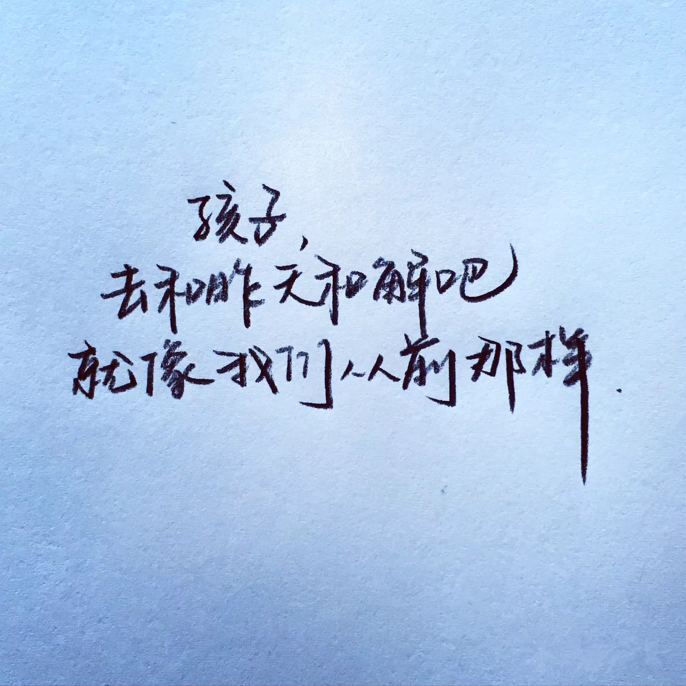
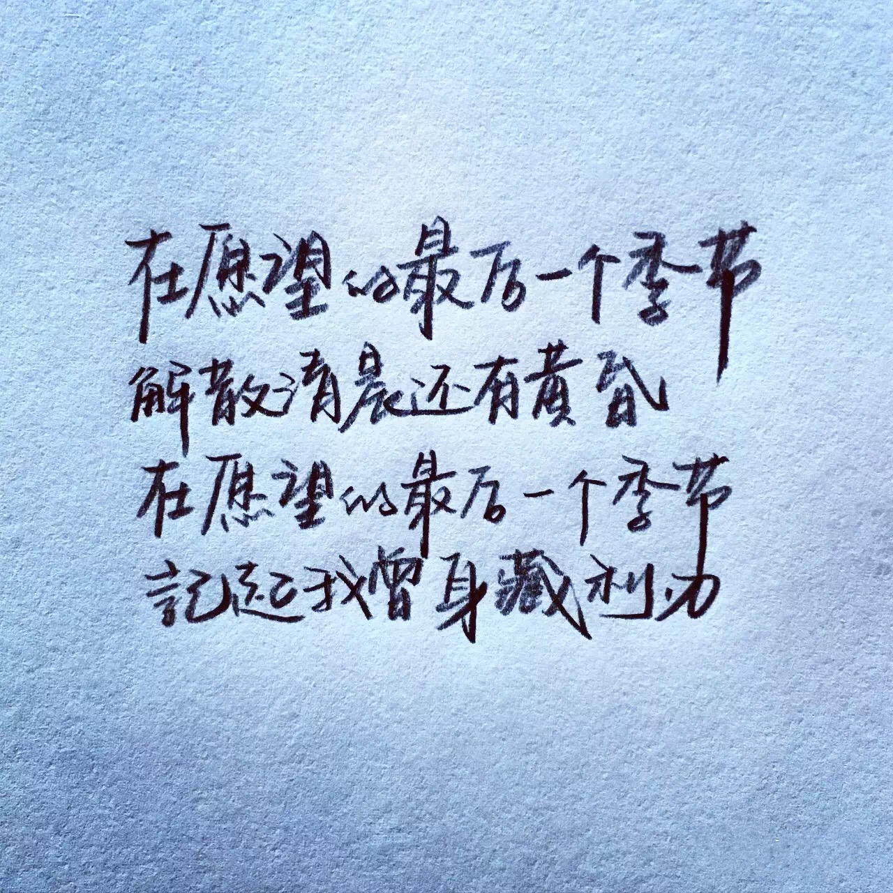
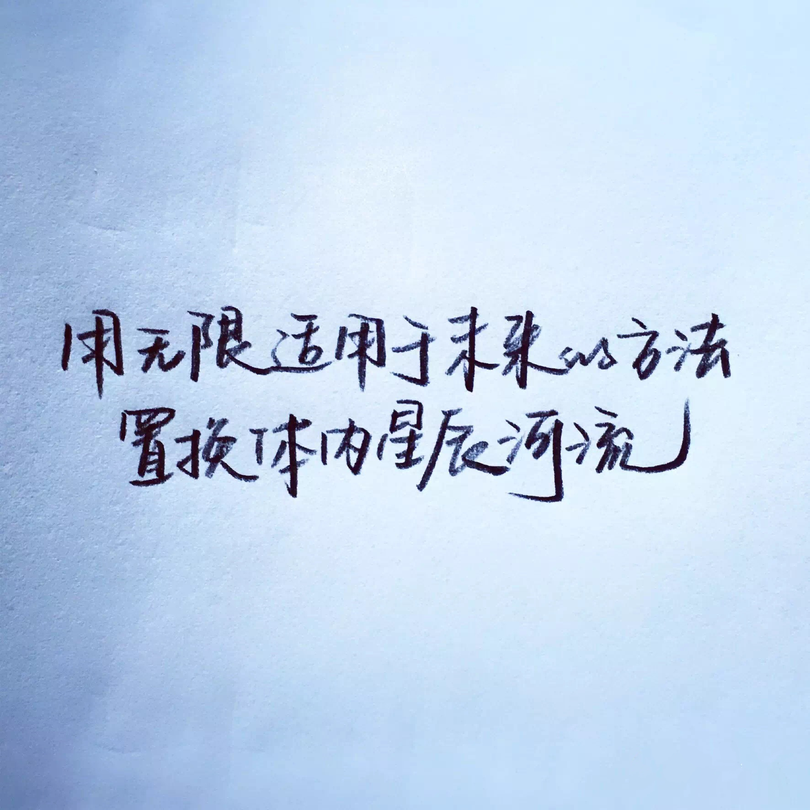

Start here：
1.

杀死那个石家庄人-万能青年旅店
如此生活三十年
直到大厦崩塌
云层深处的黑暗
淹没心底的景观

这可能是一首国谣之中最有深度的一首歌
石家庄是当年著名的工业城市，药厂更是这个城市的标志。
数以万计的药厂工人在一成不变的生活里，每天上班下班，
没有多余的娱乐方式，几瓶啤酒就能聊以慰藉。
直到90年代计划经济转型为市场经济，
大量工人下岗，失去生活来源，退岗大潮下，多数人的生活崩塌。
多数人年轻的时候就死了，一直到老后才埋。
生于理想，死于欲望。
2.

揪心的玩笑与漫长的白日梦-万能青年旅店
是谁来自山川湖海
却囿于昼夜厨房与爱

以下言论均转自网友评论：

我爸年轻的时候留过长发弹过吉他
演过话剧，造过酒
说过“你能剪掉我的头发剪不掉我的梦想”
在崔健演唱会的后台工作过
现在是个头发越来越少的中年公务员
在家吃花生喝稀饭

总以为梦想不是玩笑
也时常做着白日梦
最后才发现一切都将归于平淡
北岛说：
“那时我们有梦
关于文学，关于爱情
关于穿越世界的旅行
如今我们深夜饮酒
杯子碰到一起
都是梦破碎的声音”
可我更欣赏那份
最初竭尽所能的不留遗憾
以及最后宠辱偕忘的云淡风轻

2010年冬天
我按照豆瓣上给的地址
去了石家庄一家纹身店
买到50块一张的原版cd
店主是万青的朋友
说很少有人会来买
没过多久，万青火了
那一年我还是个摇滚青年
为了一张专辑穿越大半个中国
我在现场甩头，pogo，跳水
挤着要签名，合影
现在我只会站在最后一排
一个人听歌
然后离开
